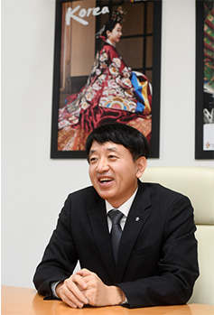

HOME > 공사안내 > CEO
CEO
‘관광으로 행복한 나라’
대한민국을 만드는 대열에 여러분들을 초청합니다.
안녕하십니까? 1960년대 국내 관광산업의 태동기부터 오늘까지 반세기가 넘는 역사를 지닌 공공기관인 한국관광공사는 척박한 환경에서 관광산업의 기반을 튼튼히 닦았던 과거를 넘어, 오늘날에는 관광을 통한 국민의 삶의 질 개선과 국민경제의 주역으로 발돋움하고자 노력하고 있습니다.
한국관광공사는 관광을 미래 성장동력으로 이끌고 국민의 삶의 질 향상에 기여한다라는 미션을 가지고, △지역관광 성장견인, △고품질 관광 경쟁력 확보, △관광산업 융복합 확대, △사회적 가치 창출을 통한 균형성장 등을 4대 전략방향으로 삼아 관광산업을 선도하는 다양한 사업들을 수행하고 있습니다.
하지만 이런 모든 일들도 공사의 소중한 고객 여러분의 협력 없이는 할 수 없습니다. 여행이 우리에게 주는 대표적인 가치 중 하나가 '나눔' 이듯, 공사는 앞으로 지자체, 업계, 학계, 유관기관 등 다양한 고객들과 교감하고 공유, 협업하면서 관광산업에 새로운 바람을 일으키겠습니다.
여러분들의 변함없는 관심과 적극적인 참여를 바라오며, 한국관광공사는 지속적으로 국민에게 신뢰받는 공공기관이 되고자 오늘도 최선을 다할 것입니다. 감사합니다.

한국관광공사 사장
안영배